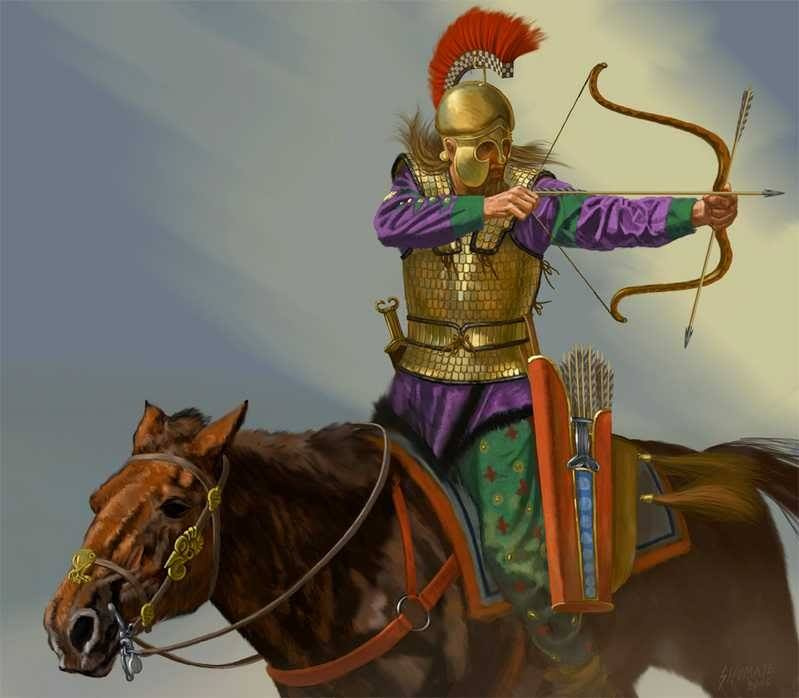

Arcul cu sageti este una dintre cele mai vechi arme cunoscute in istoria omenirii. Unele izvoare istorice dateaza originea arcului la aproximativ 25 de secole inaintea epocii moderne.
Cuprins
Prezentarea arcului
 Arcul este la origine o armă primitivă de aruncat săgeți, alcătuită
dintr-o vergea elastică ușor încovoiată și o coardă prinsă de
extremitățile vergii.
Arcul este la origine o armă primitivă de aruncat săgeți, alcătuită
dintr-o vergea elastică ușor încovoiată și o coardă prinsă de
extremitățile vergii.
Alături de primele bărci de tip canoe, care au fost, cel mai
probabil, construite în epoca mezolitică, arcul și de săgețile, sunt
mari invenții ale lui Homo sapiens. Arcul a fost folosit ca armă de
vânătoare sau de luptă încă din perioada 30.000–10.000 î.Hr. Astăzi
este folosit doar în competiții sportive de tragere la țintă.
Arcurile tradiționale sunt construite din lemn, corn sau tendoane de
animale. Arcurile cele mai apreciate sunt produse de înaltă
tehnologie, de exemplu au vergeaua compusă din mai multe straturi
diferite, iar construcția lor durează mai multe luni. Arcurile
moderne sunt perfecționate în mod continuu, ele fiind construite din
fibre speciale care asigură o elasticitate și rezistență mai mare la
încovoieri repetate.
Prezentarea sagetii
Dovezile sugerează că oamenii au fost capabili să întreprindă o serie de pași pentru a face doar vârfurile săgeților, să nu mai vorbim de arborele de lemn și arcul. Arborele săgeții, precum și arcul propriu-zis, au fost inițial făcute din lemn suficient de flexibil pentru a se îndoi și a se curba cu presiune. Diferitele culturi au făcut arcuri în mod diferit și cu diverse materiale pe baza a ceea ce era disponibil. Unele arcuri japoneze vechi au fost la fel de lungi ca 8 picioare, iar unele au fost făcute din corn sau balena. Pătratele africane erau de obicei mici; Ecosimii au folosit arcuri compuse din lemn și oase cu sinew - un țesut fibros puternic din animalele folosite pentru a se uni cu bucăți. Un arc compozit este realizat printr-o combinație de materiale, permițând fiecare piesă - sau "membre" - să fie compusă din cel mai potrivit material pentru această funcție. Culorile asiatice folosesc adesea arcuri compuse din lemn, corn și sine, care stocau energie în tensiune. Acum, arcurile sunt în mare parte fabricate din lemn stratificat, fibră de sticlă, metal și fibră de carbon.
O săgeată este alcătuită dintr-un arbore cu vârful de săgeată la vârf și vine în mai multe stiluri diferite. Inițial, lemnul era folosit cel mai frecvent pentru a modela arborele unei săgeți; este, de asemenea, cel mai ieftin material. Săgețile au fost făcute din coajă, os, piatră și metal. Capul de săgeată este de obicei atașat la arbore cu ciment, mufe sau ambele. Pene sunt folosite pentru a stabiliza săgeata în timpul zborului. Șirul arcului este adesea compus din mai multe materiale, deși variația materialelor folosite este vastă. Lobul englezesc din Evul Mediu avea în mod obișnuit o coardă din cânepă sau lenjerie, în timp ce loviturile turcești și arabe erau din mătase și mohair. Alte materiale care au fost utilizate includ rattan, bambus, fibre vegetale, piele de animale sau sinew.
Clasificarea arcului
- Arcul simplu (primtiv)
- Arcul lung englezesc (longbow)
- Arcul asirian
- Arcul scitic
- Arcul maghiar
- Arcul mongol
- Arcul lung japonez (yumi)
Se crede că primele arcuri au fost utilizate în perioada mezolitică, acum aproximativ 10.000-15.000 de ani. Cele mai vechi exemple descoperite, cum ar fi arcul Holmegaard din Danemarca, demonstrează că oamenii din acea perioadă foloseau deja tehnici avansate pentru realizarea armelor.
Un arc primitiv este, în esență, o simplă bucată de lemn curbată, legată la capete cu o coardă din fibră vegetală, tendon de animal sau intestine. Săgețile erau realizate din lemn ușor, prevăzute cu vârfuri ascuțite din piatră, os sau metal, pe măsură ce tehnologia a evoluat.
Arcul primitiv a fost inițial folosit ca unealtă de vânătoare, oferind oamenilor un avantaj semnificativ în capturarea animalelor de la distanță. Odată cu dezvoltarea societăților umane, arcul a devenit o armă de război esențială, utilizată de egipteni, greci, romani și multe alte civilizații antice.
Chiar dacă armele moderne au înlocuit arcul ca instrument principal de luptă și vânătoare, acesta continuă să fie folosit în sport, recreație și tradiții culturale. Tirul cu arcul rămâne o disciplină olimpică, iar în multe comunități indigene, tehnicile tradiționale de fabricare și utilizare a arcului sunt încă păstrate și transmise din generație în generație.
Arcul lung englezesc este un tip de arc medieval înalt, cu o lungime de circa 2 m utilizat de englezi și galezi ca armă de vânătoare sau de război. Arcul lung a fost utilizat cu eficiență împotriva francezilor în timpul Războiului de 100 de Ani, mai ales în bătăliile din faza sa incipientă, de la Crécy (1346) și Poitiers (1356), dar și în celebra bătălie de la Azincourt (1415). După aceea, arcurile lungi au fost mai puțin eficiente, arcașii suferind mari pierderi în bătălia de la Verneuil (1424), și fiind învinși în bătălia de la Patay (1429) când au fost atacați înainte de a reuși să ocupe poziții defensive.
Cel mai vechi arc lung cunoscut în Anglia, găsit la Ashcott Heath, Somerset, datează din 2665 î.Hr., dar nu există arcuri provenind din perioada începută atunci și până în vremea când arma a devenit răspândită pe scară largă (1250–1450). Probabil aceasta se întâmplă deoarece arcurile se rupeau, se slăbeau și erau înlocuite, nefiind păstrate de-a lungul mai multor generații. Există însă peste 130 de arcuri datând din perioada Renașterii. Peste 3.500 de săgeți și 137 de arcuri lungi au fost recuperate de pe Mary Rose, o corabie a lui Henric al VIII-lea scufundată la Portsmouth în 1545.
 Arcul asirian, utilizat de către asirieni în perioada antică, era un arc reflex, compus dintr-o combinație de lemn, coarne și tendoane, conceput pentru a oferi o putere de tragere semnificativă. Această construcție permitea arcașilor să tragă cu precizie și forță, fiind esențială în tacticile militare ale asirienilor.
Arcul asirian, utilizat de către asirieni în perioada antică, era un arc reflex, compus dintr-o combinație de lemn, coarne și tendoane, conceput pentru a oferi o putere de tragere semnificativă. Această construcție permitea arcașilor să tragă cu precizie și forță, fiind esențială în tacticile militare ale asirienilor.
În cadrul armatei asiriene, arcașii erau sprijiniți de infanteriști și care de luptă, formând unități specializate care acopereau diverse aspecte ale luptei. Această organizare complexă a contribuit la eficiența și succesul militar al Imperiului Asirian.
Astăzi, arcul asirian este apreciat de către pasionații de arcuri tradiționale pentru designul său distinctiv și performanțele sale remarcabile. Reconstituirile moderne ale acestui tip de arc sunt realizate cu materiale și tehnici contemporane, păstrând însă esența și funcționalitatea originală.

Arcul scitic a fost o armă esențială pentru sciți, un popor nomad din stepele eurasiatice, activ între secolele VIII î.Hr. și II î.Hr. Acest arc compozit, de dimensiuni reduse, era ideal pentru tragerea de pe cal, permițând arcașilor să mențină o mobilitate ridicată în timpul luptelor. Construcția sa implica utilizarea unor materiale precum lemnul, coarnele de animale și tendoane, toate unite cu ajutorul unui clei obținut din oase. Capetele arcului erau întărite cu tendoane, iar coarda era realizată din intestine de bovină. Această combinație de materiale conferea arcului o putere și o elasticitate deosebite, permițând săgeților să atingă distanțe semnificative.
Vârfurile de săgeți scitice erau adesea trilobate, cunoscute sub numele de "punctul scitic", și erau concepute pentru a penetra eficient armurile inamicilor. Acestea erau fabricate din bronz și aveau o formă distinctivă, cu trei lame care se extind din corpul principal. Unele dintre vârfurile de săgeți aveau ghimpe proeminente, în timp ce altele nu. Trilobul era de obicei realizat din bronz, în timp ce axul folosit pentru a livra vârful de săgeată era făcut din stuf sau lemn și avea o lungime de aproximativ 76 cm. Aceste vârfuri erau extrem de eficiente în penetrarea armurii și aveau adesea proprietăți otrăvitoare, sporind astfel periculozitatea lor pe câmpul de luptă.
Abilitățile de tragere ale arcașilor sciti erau remarcabile. Aceștia erau antrenați să tragă cu precizie în timpul galopului, executând manevre complexe și surprinzătoare, precum "lovitura parthică", în care se retrăgeau aparent din fața inamicului, doar pentru a se întoarce în șa și a trage în urmă, surprinzând adversarii. Această mobilitate și versatilitate le permitea să execute manevre complexe, surprinzând inamicii și obținând victorii decisive.
 Arcul maghiar, utilizat în secolele IX-XI, este o armă remarcabilă, specifică războinicilor maghiari din perioada migrației lor în Bazinul Panonic. Acest tip de arc face parte din familia arcurilor asiatice, caracterizate prin capetele rigide sau semirigide atașate la vârfurile membrelor arcului, de care este prinsă coarda. Printre aceste arcuri se numără arcul hunic, arcul mongol și arcul turcesc.
Arcul maghiar, utilizat în secolele IX-XI, este o armă remarcabilă, specifică războinicilor maghiari din perioada migrației lor în Bazinul Panonic. Acest tip de arc face parte din familia arcurilor asiatice, caracterizate prin capetele rigide sau semirigide atașate la vârfurile membrelor arcului, de care este prinsă coarda. Printre aceste arcuri se numără arcul hunic, arcul mongol și arcul turcesc.
Arcul maghiar este un arc compozit și reflex, simetric, conceput inițial pentru a fi folosit de călăreți. Ulterior, a fost adaptat pentru a facilita utilizarea de către pedestrași. Fabricat din materiale precum lemnul, coarnele de animale și tendoane, arcul oferea o combinație de flexibilitate și rezistență, permițând o rază de acțiune de până la 200 de metri.
Această armă a jucat un rol esențial în tacticile militare ale maghiarilor, contribuind la succesul lor în numeroase campanii și incursiuni în Europa. Arcul maghiar a fost folosit cu succes în bătălii precum cea de la Lechfeld (955), unde maghiarii au învins o armată germană condusă de Otto I, și în bătălia de la Arcadiopolis (970), unde au învins o armată bizantină.
Arcul mongol a fost o armă esențială în arsenalul războinicilor mongoli, contribuind semnificativ la expansiunea rapidă a Imperiului Mongol în secolele XIII și XIV. Acest arc compozit, de dimensiuni relativ mici, era ideal pentru tragerea de pe cal, permițând arcașilor să mențină o mobilitate ridicată în timpul luptelor. Construcția sa implica utilizarea unor materiale precum lemnul de tisă, bambusul și coarnele de capră ibex siberiană, toate unite cu ajutorul unui clei obținut din oase. Capetele arcului erau întărite cu tendoane, iar coarda era realizată din intestine de bovină. Această combinație de materiale conferea arcului o putere și o elasticitate deosebite, permițând săgeților să atingă distanțe de până la 320 de metri.
Tehnicile de tragere ale arcașilor mongoli erau remarcabile. Încă din copilărie, aceștia erau antrenați să încordeze arcul și să tragă cu precizie, chiar și în timpul galopului. Această abilitate le permitea să execute manevre complexe, precum "lovitura parthică", în care se retrăgeau aparent din fața inamicului, doar pentru a se întoarce în șa și a trage în urmă, surprinzând adversarii. Mobilitatea și versatilitatea arcului mongol, alături de măiestria arcașilor, au fost factori cheie în succesul campaniilor militare mongole, permițându-le să cucerească teritorii vaste și să stabilească cel mai mare imperiu terestru contiguu din istorie.
 Arcul japonez denumit “yumi”, are o forma asimetrica si este surprinzator de lung. In timp ce in Europa, Asia si America cel mai lung arc este aproximativ de marimea arcasului (arcul lung englezesc), arcul japonez depaseste cu mult aceasta marime. De regula lungimea unui arc lung japonez “daikyu” este de 2,30 m dar exista si se folosesc si variante mai scurte “hankyu”. Yumi e construit in mod traditional din fasii laminate bambus, in numar de 5, 7 sau 9 bucati, initial fiind construit dintr-o singura bucata. Se considera ca folosirea fasiilor de bambus laminate (lipite) a aparut ca urmare a progreselor tehnologice si a faptului ca bambusul era cu mult mai usor de procurat si folosit.
Arcul japonez denumit “yumi”, are o forma asimetrica si este surprinzator de lung. In timp ce in Europa, Asia si America cel mai lung arc este aproximativ de marimea arcasului (arcul lung englezesc), arcul japonez depaseste cu mult aceasta marime. De regula lungimea unui arc lung japonez “daikyu” este de 2,30 m dar exista si se folosesc si variante mai scurte “hankyu”. Yumi e construit in mod traditional din fasii laminate bambus, in numar de 5, 7 sau 9 bucati, initial fiind construit dintr-o singura bucata. Se considera ca folosirea fasiilor de bambus laminate (lipite) a aparut ca urmare a progreselor tehnologice si a faptului ca bambusul era cu mult mai usor de procurat si folosit.
Un alt aspect specific arcului japonez este asimetria lui, fapt nemaintalnit in alte culturi. Manerul arcului este pozitionat cam la o treime de partea de jos a arcului (si doua treimi fata de partea de sus). Multe supozitii s-au facut, posibile explicatii fiind ca aceasta forma a arcului a fost impusa de pe vremea cand se tragea cu arcul din pozitia ingenunchiat, sau pentru a usura folosirea arcului de catre calaretii arcasi. De altfel si astazi exista practica kyudo calare (yabusame),. O privire atenta insa ne descopera amanunte de o profunzime neasteptata a spiritului nipon.
Clasificarea sagetii
- Arcul simplu (primtiv)
Arcul și săgeata in mitologie
În mitologia clasică, arcul, considerat o invenţie a lui Crotos , este atri¬butul mai multor zeităţi. Poate fi întîlnit în numeroase mărturii iconografice ca parte din echipamentul Artemisei, zeiţa vînătorii, şi al corespondentei sale latine, Diana. Arc poartă adesea Orion, Chiron şi centaurii, precum şi mulţi eroi, printre care mai cu seamă Heracle. După dispariţia eroului, arcul său i-a fost încredinţat lui Filoctet. Dar, întrucît acesta nu a putut să urmeze armata greacă la Troia, oprindu-se la Lemnos din cauza unei răni îngrozi¬toare, rezultatele asediului Troiei au fost compromise. De fapt, potrivit profeţiei, numai folosirea în luptă a armelor lui Heracle asigura victoria aheilor. Ca atare, aducerea lui Filoctet la Troia va repre¬zenta o condiţie indispensabilă pentru reuşita încercării.
În poemele homerice, Apollo este ade¬seori numit „cel ce trimite săgeata departe", cu referire la arcul şi săgeţile sale, care îl însoţesc în mod frecvent în iconografie. Un alt epitet al său este Argirotoxos, „cel cu arcul de argint". Arcului său îi era atri¬buită, printre altele, puterea de a răspîndi ciuma şi molimele, cum a fost cea care a izbucnit în tabăra greacă în timpul ase¬diului Troiei: Apollo „mînios de pe vîrful Olimpului merse la vale/ Arcul pe umăr avînd şi tolba vîrtos căpăcită./ Lung zuruiră săgeţile-n tolba-i din spate, cînd zeul/ Plin de mînie porni, nălucindu-se-asemenea nopţii,/ Stete departe de tabăr-apoi şi da drumul săgeţii./ Groaznic fu zîngănul arcului cel luminos ca argintul” (Iliada, 1.43 şi urm.). Ca zeu care pedepseşte, Apollo îşi trimite adesea săgeţile, cărora li se atribuiau morţile bruşte.
Arcasul poate trage mai multe sageti intr-un inamic redutabil sau de mari proportii, simbolizand o munca depusa in etape, cu perseverenta, sau haituirea si secarea fortelor pentru a-i aplica lovitura finala.
Sageata trasa nu se identifica cu arcasul asa cum sabia (sau alta arma) este cateodata suprapusa total luptatorului. Sageata este un vector, un purtator al intentiei arcasului la distanta, si poate fi repetata sau poate fi indreptata o alta sageata identica spre un alt inamic.
De aceea arcul este potrivit vanatorii, unde prada este cautata, identificata, studiata si urmarita atent, ochita cu sageata si anihilata. Anihilarea Egourilor, a defectelor psihologice pe care le purtam inauntrul nostru, urmeaza aceleasi etape, iar daca zeii sunt cei care-l utilizeaza, inseamna ca o anumita parte a fiintei sustine efortul initiatului in demersul sau.
Iar in mitologia greaca cei doi protectori ai arcului cu sageti ne sugereaza din plin aceasta ipoteza, zeii frati Apollo si Artemis, doi dintre cei doisprezece zei Olimpieni, zei ai tineretii/inceputului, ai vindecarii/sanatatii (spirituale) si ai vigorii/energiei, nascuti pe ape, pe insula plutitoare Delos.
Artemis este si zeita nasterilor si protectoare a fetelor pana la varsta mariajului, la fel cum Apollo este cel al baietilor. Cei doi frati zei pot aduce – prin sagetile lor – moartea subita sau boala fetelor, respectiv a baietilor. Aceasta arata de fapt ca ei doi sunt cei ce ii asista de la inceput pe cei care pornesc pe drumul mistic, pe aspirantii spirituali, pana la etapa casatoriei, Sfanta Sfintelor din Evanghelia lui Filip, pana la lucrul cu Arcanul AZF. Si tot ei pot opri calea sau o pot inaspri daca adeptul nu se ridica la inaltimea probelor.
Un arcas deosebit este Heracle. Cum ii spune chiar numele, un supus al lui Hera, el indeplineste muncile dictate de ea, spre gloria ei. Aici Hera, zeita a mariajului, consoarta si sora a lui Zeus-Binah, Spiritul Sfant, o reprezinta pe Mama Divina, nascatoare dar redevenind virgina (intrucat in fiecare an redevenea fecioara scaldandu-se in apele Kanathos-ului). Tot ea este si cea care, de una singura, l-a zamislit pe Hefaistos, sau Vulcan, zeu straniu si stramb, un mag al focului sexual, al energiei creatoare din noi, sot al Afroditei-Iubirea care in forja sa a construit arme si platose, unelte si podoabe, vehicule si capcane si, deasemenea, a forjat sagetile lui Apollo si ale Artemisei.
Un arcas deosebit este Heracle. Cum ii spune chiar numele, un supus al lui Hera, el indeplineste muncile dictate de ea, spre gloria ei. Aici Hera, zeita a mariajului, consoarta si sora a lui Zeus-Binah, Spiritul Sfant, o reprezinta pe Mama Divina, nascatoare dar redevenind virgina (intrucat in fiecare an redevenea fecioara scaldandu-se in apele Kanathos-ului). Tot ea este si cea care, de una singura, l-a zamislit pe Hefaistos, sau Vulcan, zeu straniu si stramb, un mag al focului sexual, al energiei creatoare din noi, sot al Afroditei-Iubirea care in forja sa a construit arme si platose, unelte si podoabe, vehicule si capcane si, deasemenea, a forjat sagetile lui Apollo si ale Artemisei.
Heracle foloseste arcul pentru a elimina inamici care ii apar pe parcursul drumului initiatic, fiind o unealta de lucru psihologic la care apeleaza des, chiar daca ghioaga este arma care-l il insoteste si il caracterizeaza.
După cum am văzut mai sus, săgeata este prezentă în diverse mituri grecești, cum ar fi Eros, zeul iubirii, care împușcă cu ea pe îndrăgostiți.
De asemenea, în Artemis, zeița vânătorii (Diana în mitologia romană). Fiica lui Zeus și sora geamănă a lui Apollo, cu arcul și săgeata ei reprezintă capacitatea de a se concentra asupra scopurilor sale, precum și de a se proteja împotriva dușmanilor. Apollo însuși era un zeu arcaș care concentra în arcul și săgeata sa energia Soarelui.
Săgeata apare, de asemenea, în mitul lui Moros, zeul norocului și al destinului. Se spune că Moros a luat trei săgeți de la Eros și le-a ascuns în lumea muritorilor. Dacă aceste săgeți ar fi fost descoperite și eliberate, ar fi făcut ca timpul să se întoarcă la Haos. Săgeata lui Moros a fost numită Săgeata Destinului.
Un alt mit care a folosit săgeata a fost Hercule (în greacă Heracles). Într-una dintre cele douăsprezece munci ale sale, el folosește săgeți pentru a-l lovi pe Geryon, monstrul cu trei trupuri.
Batalii
Bătălia de la Posada (1330)
Bătălia a fost menționată în mai multe cronici maghiare, poloneze și germane, prima relatare fiind cea din Cronica Pictată de la Viena (cca. 1360).
În toate izvoarele nu este pomenit niciodată cuvântul „posadă”, ce desemna inițial un loc greu accesibil și apărat de elemente naturale sau artificiale. Denumirea de „Bătălia de la Posada” a fost introdusă și încetățenită în istoriografia românească de către Nicolae Iorga, la începutul secolului XX. Istoricul considera că bătălia din 1330 s-ar fi desfășurat „în cazanul de la Posada, pe drumul Câmpulungului”.
În 1324 Basarab I, domnul Țării Românești, se afla sub suzeranitatea lui Carol Robert de Anjou, regele Ungariei. Un an mai târziu, domnitorul român cucerește Severinul, ceea ce a dus la răcirea relațiilor cu Regatul Ungar. Mai mult decât atât, din 1327 Basarab refuză să mai plătească tributul. Aceste fapte l-au determinat pe regele ungar, la sfatul lui Dionisie (mai târziu ban de Severin), să întreprindă o expediție de recucerire a teritoriului pierdut și de pedepsire a vasalului său.
În luna septembrie a anului 1330, Carol Robert de Anjou, cu o puternică armată, pleacă din Timișoara să-l pedepsească pe fostul său vasal. Ocupă Banatul de Severin și înaintează prin Oltenia, pustiită în prealabil de către Basarab, spre Curtea de Argeș. Datorită acestei strategii de apărare, în rândurile armatei invadatoare se instalează foametea încă de la intrarea în Țara Românească. Pe drum, Carol Robert primește o solie din partea domnitorului român (ilustrată și într-una dintre cele trei miniaturi legate de acest subiect ale Cronicii pictate de la Viena), care îi aduce o propunere de pace. Oferta de pace făcută de Basarab I este refuzată de către rege, deși i se promitea generos o despăgubire a 7.000 de mărci de argint, cedarea cetății Severinului și trimiterea unui fiu la curtea ungară ca garanție, "numai vă întoarceți în pace și vă feriți de primejdii, că de veți veni mai încoace, nu veți scăpa de dânsele".
Carol Robert răspunde cu aroganță că Basarab este păstorul tuturor oilor sale și că îl va scoate de barbă din vizuina lui. În cele din urmă, armata maghiară ajunge la Curtea de Argeș, pe care o găsesc pustie și o incendiază.
Unele relatări ungurești dar și cronica polonă a lui Jan Długosz povestesc despre un armistițiu încheiat între cele două părți beligerante, cu condiția ca românii să conducă armata invadatoare către Ungaria pe drumul cel mai scurt. Ghizii români puși la dispoziția regelui de către Basarab i-ar fi condus apoi pe unguri într-un defileu unde acesta le pregătise o capcană. Odată ajunși în acea vale îngustă și prăpăstioasă, ungurii sunt atacați și zdrobiți, un rol important îl joacă arcașii care lansează o ploaie de săgeți asupra celor prinși în defileu. Au existat două atacuri, conform documentelor. Primul, dat în susul văii, a oprit înaintarea intrușilor, iar al doilea a însemnat distrugerea lor (9-12 nov 1330).
„Basarab a venit pe o cale cu toată oastea sa, și calea sucită și de amândouă părțile cu râpe foarte înalte, era închisă împrejur, și unde calea zisă era mai largă, acolo valahii în mai multe locuri o întăriseră cu șanțuri săpate împrejur. Iar regele și toți ai săi la așa ceva întru adevăr nu s-au gândit. Mulțimea nenumărată a valahilor, sus pe râpi alergând din toate părțile, arunca săgeți asupra oastei ungurești care era în fundul căii de drum, care însă nu ar fi trebuit numit drum, ci mai curând un fel de corabie strâmtă, unde, din pricina înghesuielii, cei mai sprinteni cai și ostași cădeau în luptă, pentru că din pricina urcușului prăpăstios din cale nu se puteau sui contra valahilor, pe nici una din râpele de pe amândouă laturile drumului; nici nu puteau merge înainte, nici nu aveau loc de fugă, fiind șanțurile săpate acolo, ci ostașii regelui erau cu totul prinși, ca niște pești în vârșă sau în mreajă.” (Cronica pictată de la Viena)
Carol Robert de Anjou a scăpat cu greu, schimbând hainele sale cu ale unui oștean pentru a nu fi recunoscut. Printre victime, alături de numeroși nobili, s-au numărat și Toma, voievodul Ardealului, Andrei de Alba, purtătorul sigiliului regal, precum și preotul personal al regelui. O parte a supraviețuitorilor au fost luați în robie, însuși regele recunoscând, doi ani mai târziu, că în urma bătăliei „s-au tras nu puține robii, cazne și primejdii pentru neamul unguresc”.
„Au căzut tineri și bătrâni, principi și nobili, fără nici o deosebire. Căci această tristă întâmplare a ținut mult, de la ziua a șasea a săptămânii, până la ziua a doua a săptămânii viitoare, în cari zile ostașii aleși așa se izbeau unii pe alții precum în leagăn se leagănă și se scutură pruncii, sau ca niște trestii clătinate de vânt. S-a făcut aici mai cumplită ucidere, căci a căzut mulțimea de ostași, principi și nobili, și numărul lor nu se poate socoti.”(Cronica pictată de la Viena)
Prin această victorie, Basarab I a reușit să consolideze independența ținutului, să o întărească din punct de vedere statal, pentru ca mai apoi să-i lărgească hotarele. Relațiile cu Regatul Ungariei s-au îmbunătățit abia după moartea lui Carol Robert (1342) și suirea pe tron a fiului său Ludovic I, în special după 1345. În 1354, Nicolae Alexandru a recunoscut suzeranitatea regelui maghiar.
Bătălia de la Crécy (1346)

 Purtată în nordul Franţei, în apropiere de Crécy, bătălia este una dintre cele mai impresionante bătălii, nu prin victoria englezilor asupra unei armate net superioare ci prin tehnicile de luptă folosite în timpul ei.
Purtată în nordul Franţei, în apropiere de Crécy, bătălia este una dintre cele mai impresionante bătălii, nu prin victoria englezilor asupra unei armate net superioare ci prin tehnicile de luptă folosite în timpul ei.
În fruntea celor două armate au fost Eduard al III-lea, Anglia şi Filip al VI-lea al Franţei.
În timpul bătăliei, englezii, au hotărât să adopte o poziţie defensivă avatajoasă, folosind eficient forţa militară foarte bine organizată precum şi arma a cărei însemnătate nu poate fi contestată:arcul lungit.
Se spune că disperarea (poate din cauza faptului că bătălia se poarta pe un teritoriu total necunoscut) i-a împins pe englezii să folosească tacticile “neortodoxe”experimentate pe vecinii lor scoţieni:în loc să ducă o confruntare directă cu francezii, englezii au preferat să descalece adoptând o poziţie defensivă, aliind arcaşii în apropierea taberi adverse.
În momentul confruntării, francezii au fost puşi la pământ sub ploaia de de săgeţi. Regele Filip şi o mare parte a aristocraţiei franceze au fost anihilaţi, iar regele Eduard a devenit un erou.
Victoria a avut drept urmare menţinerea entuziasmului englezilor faţă de război, precauţia francezilor în atacuri şi asediul portului Calais în 1347.
Combinaţia de arme şi tehnici militare superioare au făcut ca această bătălie să fie considerată sfârşitul cavalerismul clasic, demonstrând importanţa conceptului militar. este de asemenea una dintre primele bătălii dintre puterile europene in care s-a folosit tunul. Englezii mai încercaseră efectele tunului asupra scoţienilor în 1327.
Bătălia de la Agincourt (1415)


Henric a traversat Canalul Mânecii cu 11.000 de oameni și a asediat Harfleur, în Normandia. După cinci săptămâni, orașul s-a predat, dar Henric și-a pierdut jumătate din oameni din cauza bolilor și a pierderilor din luptă. El a decis să mărșăluiască armata sa spre nord-est, spre Calais, unde se va întâlni cu flota engleză și se va întoarce în Anglia. La Agincourt, însă, o vastă armată franceză de 20.000 de oameni i-a ieșit în cale, depășind cu mult numărul arcașilor, cavalerilor și oamenilor de arme englezi epuizați.
Câmpul de luptă se întindea pe o distanță de 1.000 de metri de teren deschis între două păduri, ceea ce a împiedicat manevrele pe scară largă și a fost astfel în avantajul lui Henric. La ora 11 a.m., pe 25 octombrie, a început bătălia. Englezii au rămas pe poziții, în timp ce cavalerii francezi, îngreunați de armurile lor grele, au început să avanseze lent pe câmpul de luptă noroios. Francezii au fost întâmpinați cu o puternică lovitură din partea arcașilor englezi, care mânuiau arcuri lungi inovatoare cu o rază de acțiune de 250 de metri. Cavalerii francezi au încercat să copleșească pozițiile englezilor, dar arcașii erau protejați de o linie de țăruși ascuțiți. Pe măsură ce tot mai mulți cavaleri francezi își făceau loc pe câmpul de luptă aglomerat, mobilitatea lor a scăzut și mai mult, iar unii nu aveau nici măcar spațiul necesar pentru a ridica armele și a da o lovitură. În acest moment, Henric le-a ordonat arcașilor săi slab echipați să se năpustească în față cu săbii și topoare, iar englezii i-au masacrat pe francezi.
Aproape 6.000 de francezi și-au pierdut viața în timpul Bătăliei de la Agincourt, în timp ce Henric al V-lea a pierdut puțin peste 400. Henric a obținut una dintre cele mai mari victorii din istoria militară. După alte cuceriri în Franța, Henric a fost recunoscut în 1420 ca moștenitor al tronului francez și regent al Franței. Era la apogeul puterilor sale, dar a murit doar doi ani mai târziu din cauza febrei, în apropiere de Paris.